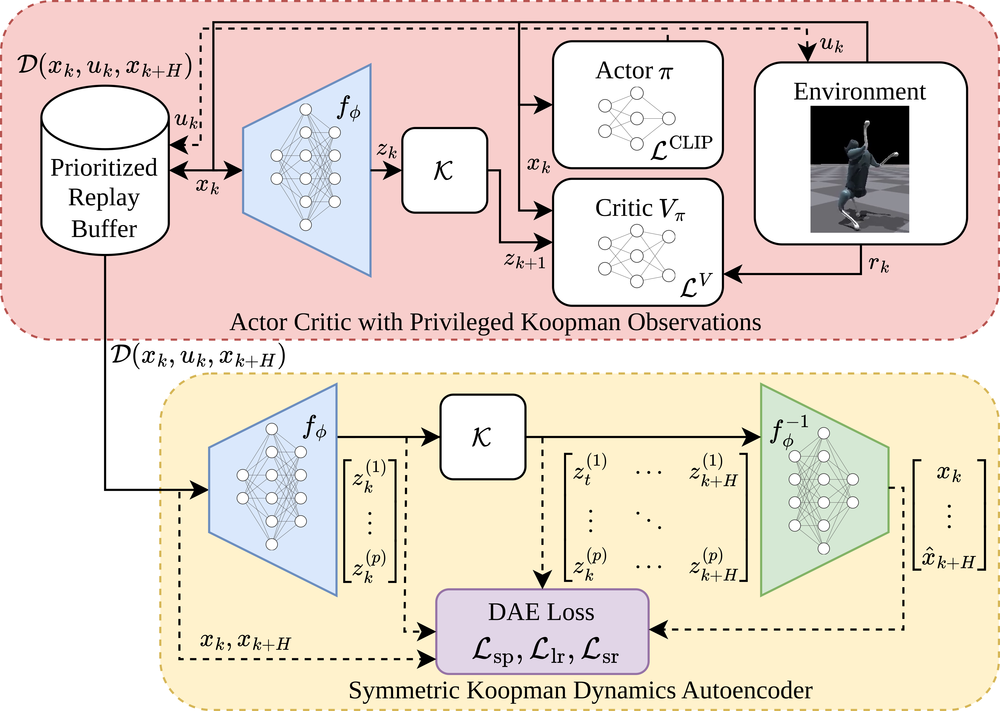

SKooP: Symmetric Koopman Predictions for Faster and More Generalizable Legged Robot Locomotion with Reinforcement Learning
Method

Abstract
Reinforcement learning (RL) algorithms classically suffer from poor sample efficiency. In robotics, a recent line of work has emerged addressing this problem by encoding physics priors in the learning process. However, most of these approaches are validated on well-defined, low-dimensional benchmark systems rather than high-dimensional robots with complex nonlinear dynamics. In this paper, we introduce SKooP (Symmetric Koopman Predictions), an approach combining the advantages of morphological symmetries with those of a Koopman model learned via autoencoder to enhance policy learning. SKooP learns a Koopman model of the system dynamics alongside the policy. The resulting Koopman predictions are used as privileged observations for the critic, allowing the agent to learn based on smoother, more informative features. We also incorporate group symmetries into the actor, critic, encoder and decoder networks to produce a highly equivariant policy. The SKooP approach is validated via in-depth analysis of the learned Koopman models and symmetric policies to showcase how each of these influences the agent’s performance. We also show that the learned policies are transferable to different simulation environments. Our results show that SKooP consistently reduces convergence time and increases the learned reward for multiple challenging bipedal locomotion tasks on a quadruped robot.
BibTeX
@misc{delia2026skoopsymmetrickoopmanpredictions,
title={SKooP: Symmetric Koopman Predictions for Faster and More Generalizable Legged Robot Locomotion with Reinforcement Learning},
author={Evelyn D'Elia and Weishu Zhan and Giulio Turrisi and Giulio Romualdi and Giuseppe L'Erario and Raffaello Camoriano and Wei Pan and Daniele Pucci},
year={2026},
eprint={2607.11624},
archivePrefix={arXiv},
primaryClass={cs.RO},
url={https://arxiv.org/abs/2607.11624},
}
}